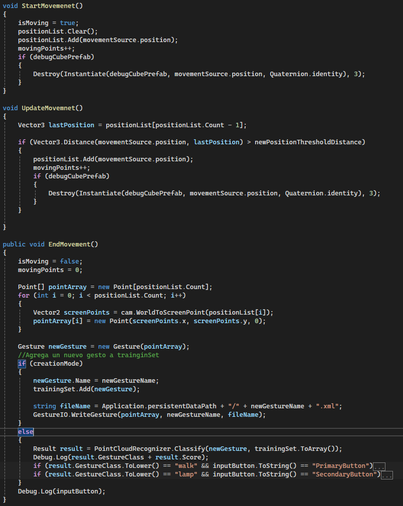

Projects

Run VR Game, Unity 2022
- Horror virtual reality game using Unity's XR toolkit plugin
- Gesture recognition implementation for running and climbing mechanic
- Implementation for holding game objects
- Usage of NavMesh for the enemies and NPC's

Locomotion Code
- The StartMovement() method saves the moving points that the player generates when swinging the arms
- The UpdateMovement() method add the points to an array
- The EndMovement() saves the new gesture generated and the moving points the player needs to achieve in order to move